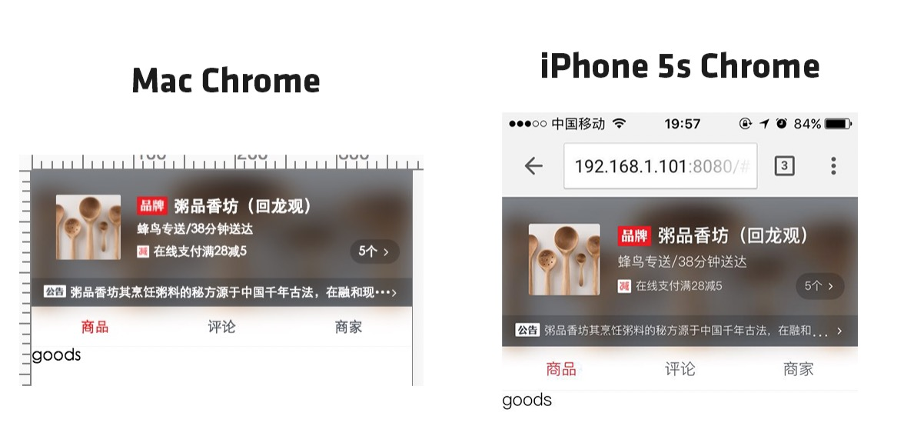
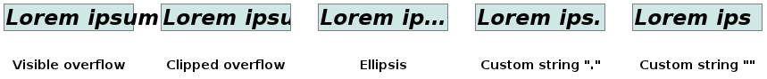

<div ref="streamContainer" class="stream-container">
    <div class="post-list-container post-list-container-shadow">
        <div class="post">
            <div class="post-head-wrapper"
                 style="background-image: url('/2017/04/19/简单探索text-overflow/pic.jpg')">
                <div class="post-title">
                    简单探索text-overflow
                    <div class="post-meta">
                        <time datetime="2017-04-19T19:46:39.000Z" itemprop="datePublished">
                            2017-04-19 19:46
                        </time>&nbsp;
                        
                        
                        <i class="material-icons" style="">folder</i>
                        
                        <a href='/categories/CSS/'>CSS</a>
                        
                        
    
                        
                        
                        <i class="material-icons" style="">label</i>
                        
                        <a href='/tags/HTML-CSS/'>HTML/CSS</a>, 
                        
                        <a href='/tags/CSS3/'>CSS3</a>
                        
                        
                    </div>
                </div>
            </div>
    
            <div class="post-body-wrapper">
                <div class="post-body">
                    <!-- no node -->

<span id="more"></span>

<h1 id="认识"><a href="#认识" class="headerlink" title="认识"></a>认识</h1><p>“ text-overflow” 属性用于确定告知用户此处有因溢出而无法显示的内容的方式。它可以截断（clipped）掉溢出的内容，也可以显示一个省略号（ ‘…’, U+2026 HORIZONTAL ELLIPSIS，水平省略号），或者显示一个自定义的字符串。 </p>
<h1 id="遇到问题"><a href="#遇到问题" class="headerlink" title="遇到问题"></a>遇到问题</h1><p>在练习vue-eleme时，遇到了这么一个奇妙的问题，设置这段CSS后，PC端显示内容与移动端显示内容稍有不符。</p>
<pre class="line-numbers language-css"><code class="language-css"><span class="token property">white-space</span><span class="token punctuation">:</span> nowrap
<span class="token property">overflow</span><span class="token punctuation">:</span> hidden
<span class="token property">text-overflow</span><span class="token punctuation">:</span> ellipsis
<span aria-hidden="true" class="line-numbers-rows"><span></span><span></span><span></span></span></code></pre>
<p>我将一段内容设置了文字溢出后截断溢出内容，并显示省略号，以下为出入：</p>
<p></p>
<p>溢出的省略号内容的出入的确很让人头痛。</p>
<h1 id="尝试解决"><a href="#尝试解决" class="headerlink" title="尝试解决"></a>尝试解决</h1><p>然后去MDN仔细看了看<a target="_blank" rel="noopener" href="https://developer.mozilla.org/en-US/docs/Web/CSS/text-overflow">text-overflow</a></p>
<p></p>
<p>看到了一个很有意思的参数：Custom string “”。但是很遗憾的是大部分浏览器<strong>不支持</strong>。</p>
<p>带着测试的心态，我修改了下代码内容：</p>
<pre class="line-numbers language-css"><code class="language-css"><span class="token property">white-space</span><span class="token punctuation">:</span> nowrap
<span class="token property">overflow</span><span class="token punctuation">:</span> hidden
<span class="token property">text-overflow</span><span class="token punctuation">:</span> <span class="token string">"···"</span>
<span aria-hidden="true" class="line-numbers-rows"><span></span><span></span><span></span></span></code></pre>
<p>用Firefox试了一试：</p>
<blockquote>
<p>移动端Firefox版本未达到9.0</p>
</blockquote>
<p></p>
<h1 id="总结"><a href="#总结" class="headerlink" title="总结"></a>总结</h1><p>最终因为浏览器兼容性问题，没有采用这个解决办法。但是在尝试解决问题的过程中对<code>text-overflow</code>有了更进一步的认识，这很值得。</p>

                </div>
            </div>

            
            
            
    
            
    
            
        </div>
    </div>
    
</div>


